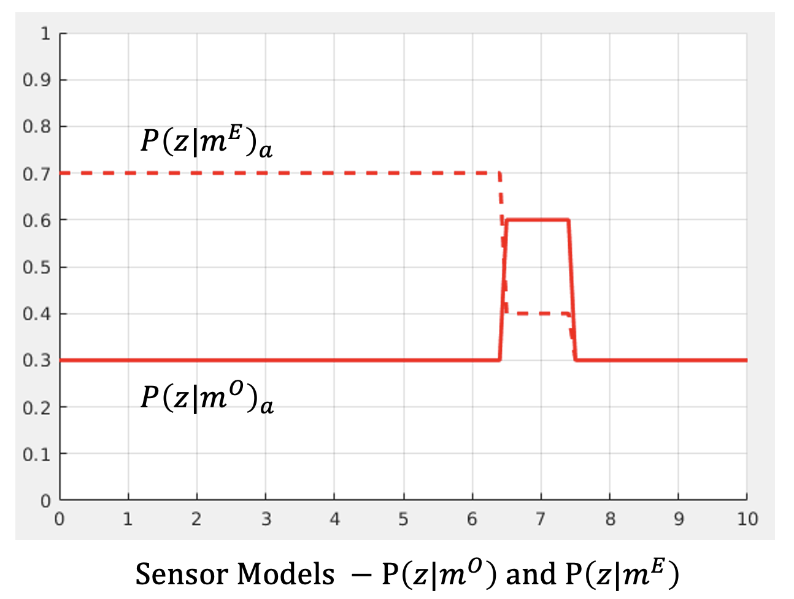
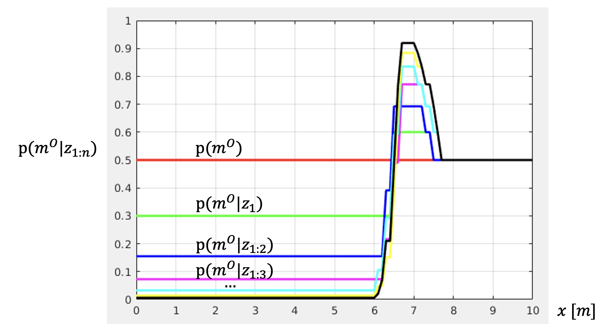

Readme
These are the online resources for the MPC-MAP course.
See the semester project and assignment pages for detail information.
Week 2 - Sensor Modeling
Using MATLAB script, simulate the simple 1D map building process using the simulated measurement and self-proposed Sensor Model.
Create a single A4 report that will describe your approach to the exercise (3-6 sentences for each task and picture, if makes sense).
Task 1
Define parameters of your simulation
- Distance of the obstacle x
- Standard deviation of your sensor σ
- Discrete map parameters (cell size c and covered area d)
Note: Choose these values with the idea of visualizing your simulation. The visual outputs simulated for parameters of x=100m and σ=0.001m c=0.001m, d=200m will be useless.
Task 2
In the script file, implement the following functions:
- The “measure” function will return a single measurement sample with a normal distribution of (μ=obstacle_distance, σ=sensor_std_dev).
- The “get_positive_sensor_model”; p(z | m_o); function will return gaussian-based obstacle probability distribution function for the entire map space.
- Complementary implement also the “get_neg_sensor_model”; p(z | m_e).
Task 3
Create a simulation of the mapping process. Generate 5-10 measurement samples and for each of them generate P(𝑚^o | 𝑧) distribution using the sensor model and update the probability distribution of the obstacles in the map P(𝑚^o). Document the simulation of the map building process with several images, especially the final state of the map model.
Notes
p(z | m_o)_a - positive sensor model (prob. that cell a is occupied, if we measured distance z)
p(z | m_e)_a - negative sensor model (prob. that cell a is empty, if we measured distance z)
p(m_o | z)_a - inverse sensor model (map; probability that cell a is occupied, if we measured distance z)
 Submission
Send the report and all related MATLAB scripts at adam.ligocki@vutbr.cz. MATLAB script must be executable without errors and has to generate all graphical outputs that are in the report. Deadline: Spring Semester 2023, Week 1, Sunday 23:59.
Week 3 - Motion Control
Bublebum
Week 4 - Particle Filter
Bublebum
Week 5 - Kalman Filter
Bublebum
Week 6 - Path Planning
Bublebum
Semester Project
! Work in progress !
Cíle projektu
Cílem semestrálního projektu je vytvořit algoritmus pro předložený simulátor v Matlabu, pomocí kterého dojede robot do cíle v co nejmenším počtu iterací. Algoritmus musí fungovat pro různé mapy a pozice startu a cíle; robot nesmí narážet do překážek. Metody vhodné pro splnění zadání budou probrány na přednáškách a cvičeních, ne všechny musí být použity. Pro splnění zadání je možné pouze vyčítat data z laserového skeneru a nastavovat rychlosti robotu. Pro účely vizualizace je možné použít jakékoliv proměnné z workspace.
Simulátor
Simulátor je dostupný v repozitáři: https://github.com/Robotics-BUT/MPC-MAP-Student Simulátor nesmí být modifikován, hodnotit se bude na předloženém simulátoru.
Způsob hodnocení
Vytvořený algoritmus bude vyučujícími otestován na různých mapách s různými souřadnicemi startu a cíle. Úspěšnost dojetí do cíle a potřebný počet iterací bude vyhodnocen statisticky opakovaným spouštěním algoritmu.
Odevzdání
Projekt odevzdejte ve formě komprimovaného souboru obsahující celý spustitelný projekt v Matlab elektronicky na email adam.ligocki@vutbr.cz do konce 10. týdne semestru (11. 4. 2022).
Bodové hodnocení
Hodnocení cvičení během semestru:
- Cvičení na model snímače: 10b
- Cvičení na motion control: 10b
- Cvičení na částicový filtr: 10b
- Cvičení na Kalmanův filtr: 10b
- Cvičení na plánování trajektorie: 10b
Hodnocení projektu:
- Úspěšnost dojetí do cíle: 10b
- Potřebný počet iterací: 10b
- Technické řešení: 30b